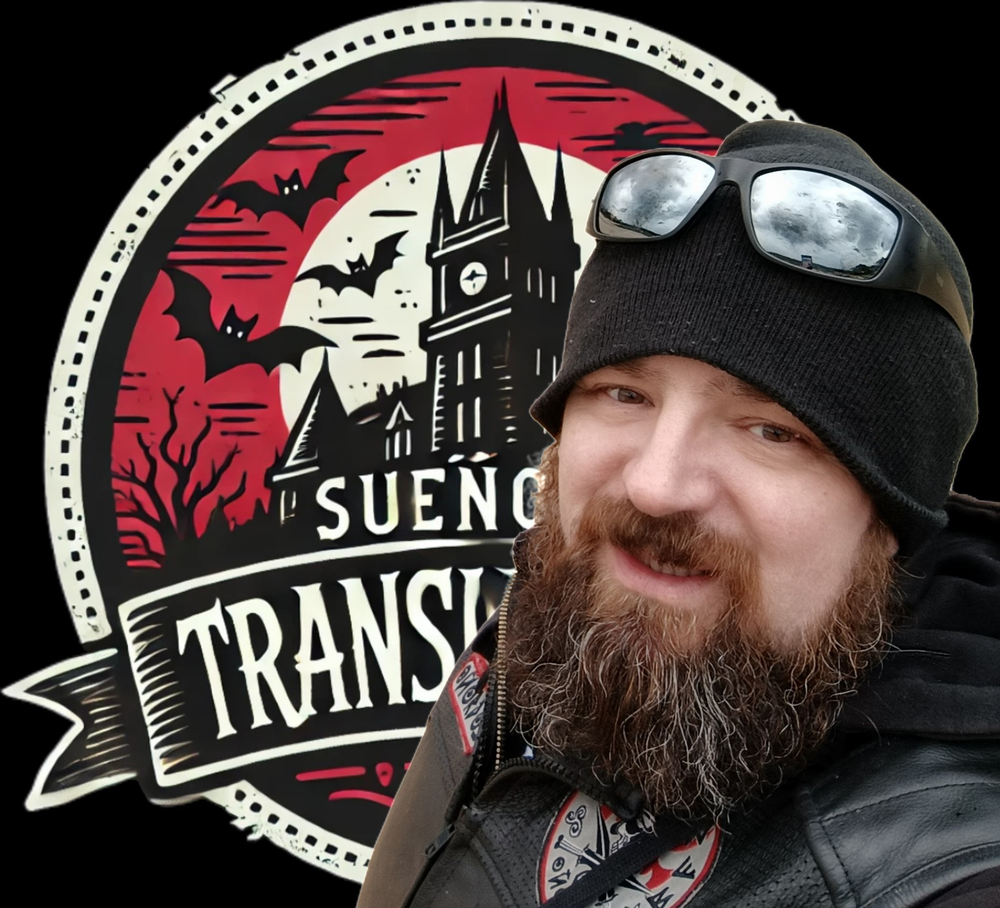
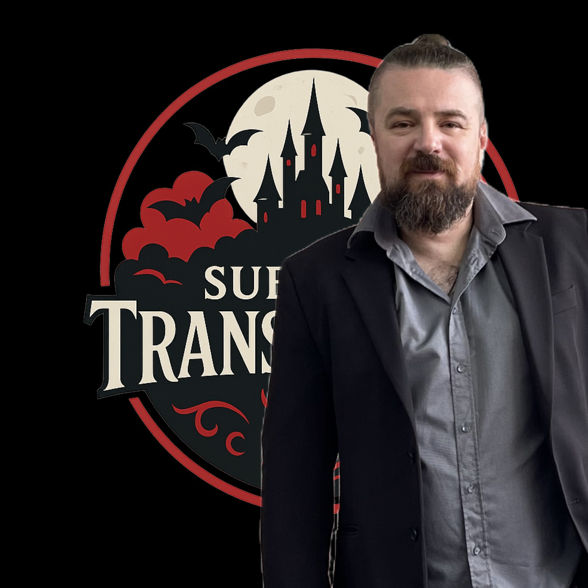
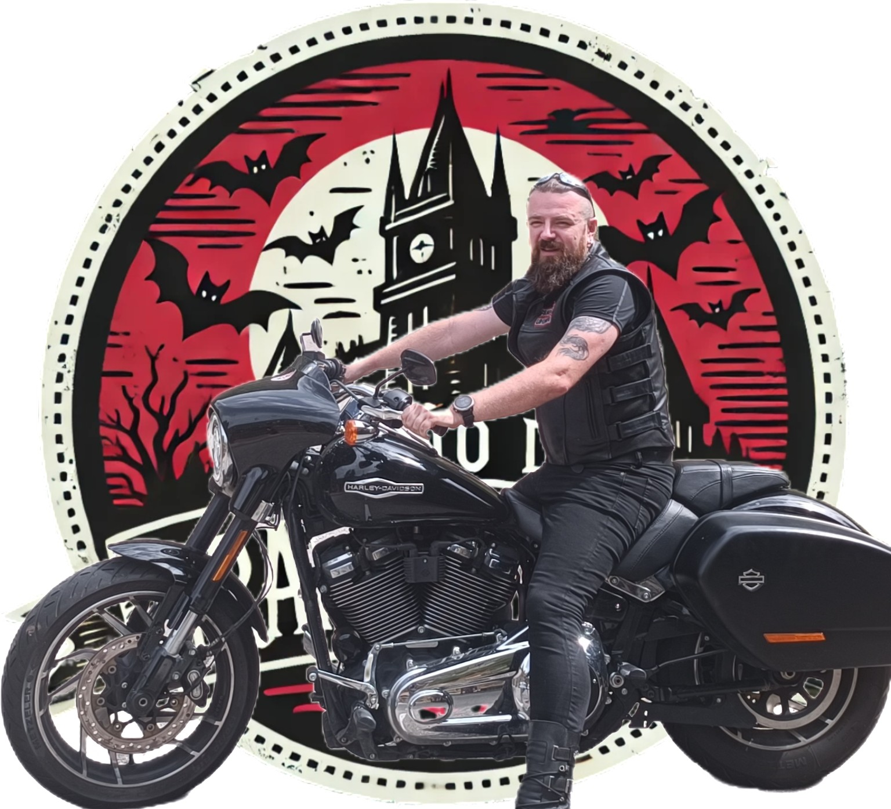
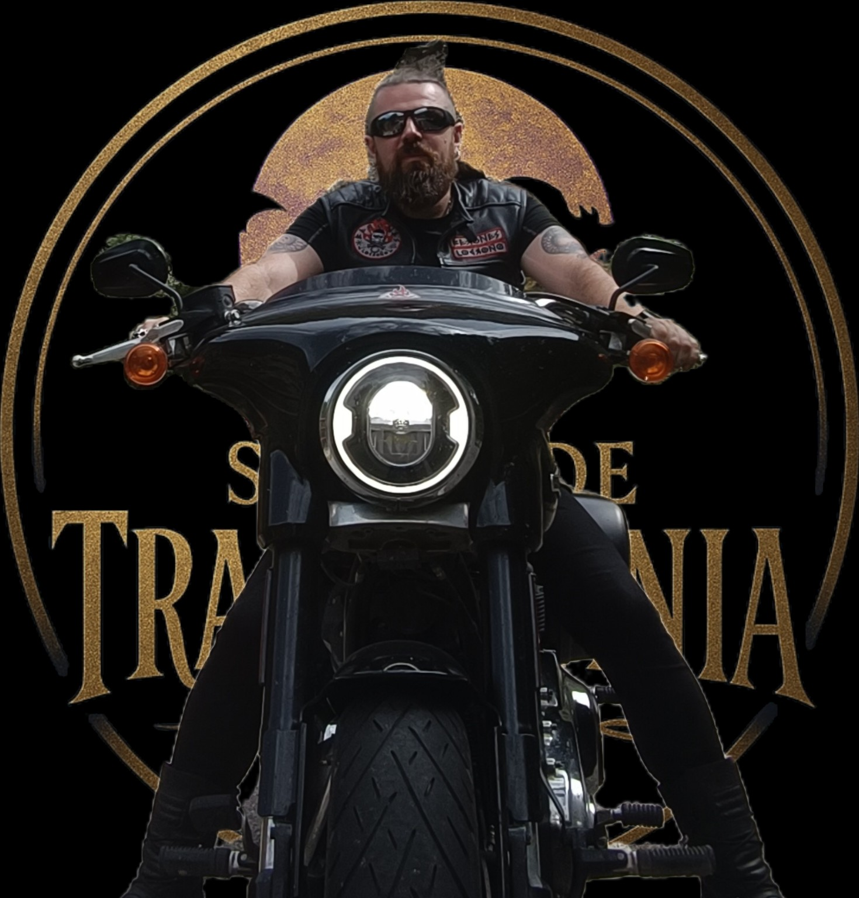

Quién es Sueño de Transilvania
Sueño de Transilvania no es un grupo. Es un proyecto personal que nace del corazón de Maxim Capalnas Flaviu. Ingeniero de formación, creador por vocación y apasionado por la historia de España, la música y el mundo motero.
Aunque nací en el corazón de Transilvania, mi alma está profundamente enamorada de España. Con este proyecto quiero rendir homenaje a su historia, sus héroes y su cultura a través de canciones, letras y videoclips que nacen desde lo más profundo.
Sueño de Transilvania también representa mi pasión por las Harley-Davidson. La carretera, la libertad, el sonido del motor... Todo forma parte de la esencia de mis creaciones.
Este sueño que comenzó hace años se ha hecho realidad gracias a las herramientas de inteligencia artificial, que me permiten transformar ideas y letras en música, y llevar a cabo una producción audiovisual completa desde mi estudio personal.
Gracias por formar parte de esta aventura.